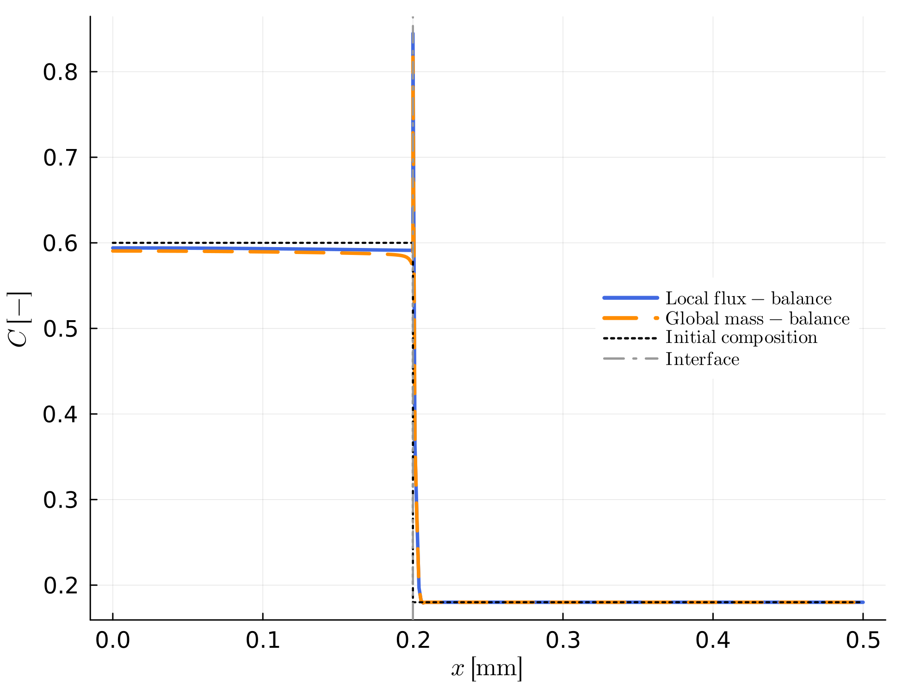

Boundary Conditions
Two independent sets of boundary conditions close the diffusion problem described in Numerical Approach: outer boundary conditions at the two edges of the modelling domain, and inner (interface) boundary conditions at the moving interface. This page covers the equations behind both; see Quick Reference for which input parameter or function controls each, and General Remarks for how inner/outer boundaries relate to each other conceptually.
Outer boundary conditions
Set independently per side via BCout = [left, right] in set_outer_bc!:
Dirichlet (
BCout[i] == 1) — composition is fixed at the domain edge:\[C(x_{edge}) = C_{edge}\]
taken from the first/last entry of
C_left/C_right. Use this to represent an effectively infinite reservoir (e.g. a melt far from the crystal) that the diffusion front never depletes.Neumann (
BCout[i] != 1) — zero flux:\[D \left.\frac{\partial C}{\partial x}\right|_{x_{edge}} = 0\]
This is implemented implicitly: the corresponding row of the FEM system (Numerical Approach) is simply left as assembled, since a Galerkin discretization already enforces zero flux as its natural boundary condition unless a constraint overrides it. Use this for e.g., closed systems, where
calc_mass_erris expected to stay small — see Interpreting Output.
Inner (interface) boundary conditions
The interface is not fixed in space — it moves at the modelled growth/resorption rate — so two conditions are needed to close the system at the two grid nodes adjacent to it (the last left node and the first right node). Three physically distinct approaches are available, one per function you call: the local flux-balance condition, the local mass-balance condition, and the (thermodynamically constrained) Stefan condition. Each is self-contained — described fully in its own subsection below, without reusing another's equations or terminology — and only one is active in any given model run. A summary table at the end contrasts all three.
Local flux-balance condition — set_inner_bc_flux!
Used for prescribed-rate growth/resorption in diffusion couples ("B" examples). V_ip is a fixed model input here. Given V_ip, two conditions solve for the two unknown interface compositions:
Partitioning — the interface compositions are related by the (fixed) distribution coefficient:
\[K_D = \frac{C_{left}^{int}}{C_{right}^{int}}\]
Flux continuity — because the interface compositions on the two sides differ ($C_{left}^{int} \neq C_{right}^{int}$ in general), moving the interface at the prescribed velocity
V_ipby itself converts mass from one phase into the other. This is balanced against the mismatch in diffusive flux on either side of the interface:\[\left(\rho_{right} C_{right}^{int} - \rho_{left} C_{left}^{int}\right) V_{ip} = \rho_{left} D_{left}\left.\frac{\partial C}{\partial x}\right|^{int}_{left} - \rho_{right} D_{right}\left.\frac{\partial C}{\partial x}\right|^{int}_{right}\]
Local mass-balance condition — set_inner_bc_mb!
Used where the total amount of a species in the domain is prescribed rather than matched locally at the interface ("C" examples). V_ip is a fixed model input here, exactly as in the flux-balance condition above. Two conditions are applied:
Global mass balance — the volume-weighted sum of the whole composition vector must equal a prescribed total mass:
\[\sum_i \Delta V_i\, C_i = M_{tot}\]
via
dVolC/Mtot(calc_volume,calc_mass_vol).Partitioning — the interface compositions are related by the (fixed) distribution coefficient:
\[K_D = \frac{C_{left}^{int}}{C_{right}^{int}}\]
Thermodynamically constrained (Stefan) condition — set_inner_bc_stefan!
Used when the interface composition comes from a digitized phase diagram rather than a fixed K_D ("D" examples). Both interface nodes get Dirichlet values read directly from the phase-diagram polynomials at the current temperature:
\[C_{left}^{int} = C_{left}(T), \qquad C_{right}^{int} = C_{right}(T)\]
V_ip is not a model input for this condition — see The (chemical) Stefan Problem for how it is computed, how C_left(T)/C_right(T) are obtained from the digitized phase diagram (composition), and how the initial bulk composition and domain length are set.
Comparing the three inner conditions
| Local flux-balance | Global mass-balance | Stefan condition | |
|---|---|---|---|
| Interface compositions | solved from K_D + flux continuity | solved from K_D + global mass constraint | read from the phase diagram (Dirichlet) |
Interface velocity V_ip | prescribed model input | prescribed model input | solved for — see The (chemical) Stefan Problem |
| Example family | "B" | "C" | "D" |
The Stefan condition needs fundamentally different inputs (a phase diagram and a temperature path, not a fixed K_D), so it isn't directly comparable on the same setup — but the flux-balance and mass-balance conditions are: running the exact same stationary diffusion couple (same D, Ri, K_D(t) path, V_ip = 0) with each shows they agree in the far field (both conserve the same total mass) and have some small disagreement near the interface, since one enforces flux continuity there and the other only the domain-wide integral:
